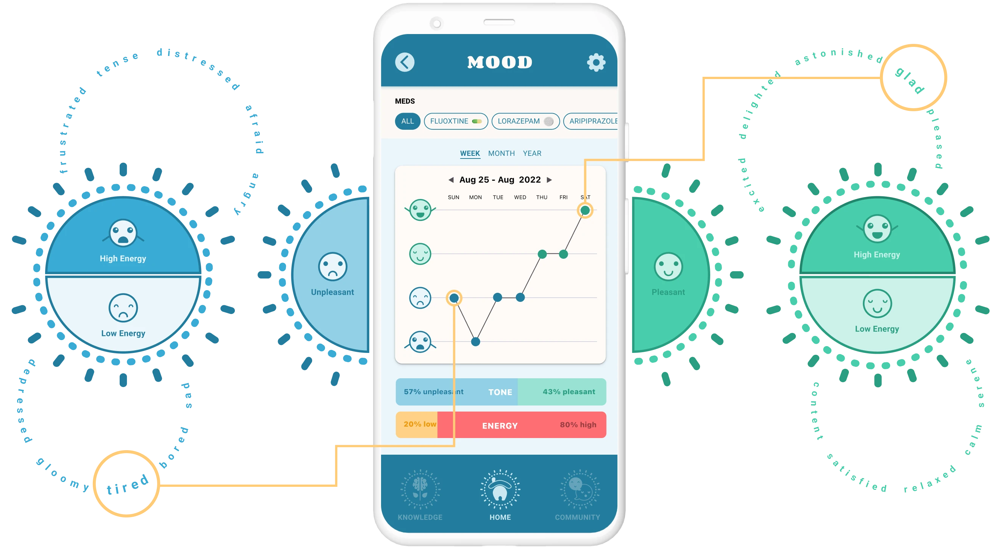
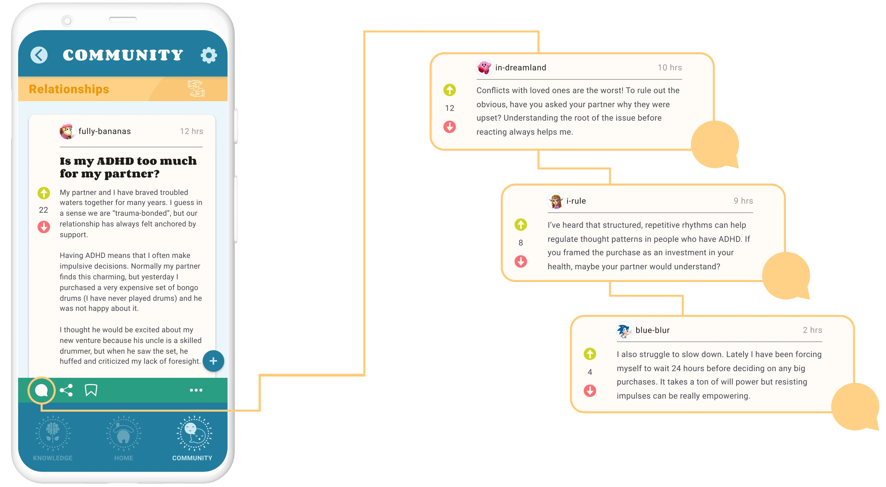
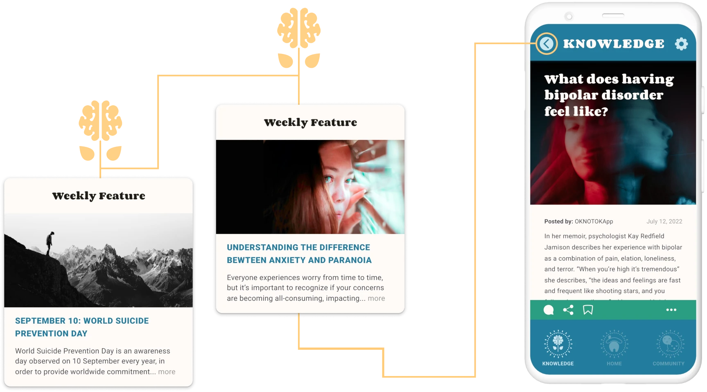
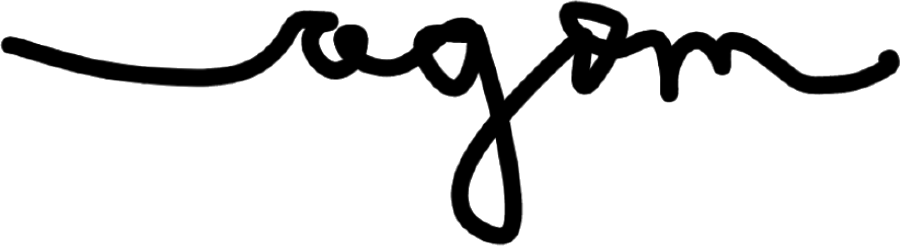

OK NOT OK
Mind your medication
Brief
A mobile app to measure the relationship between psychiatric medication use and mood
Goal
To reduce risk of harm and support the mental health of psychiatric medication users
Roles
UX Researcher
UX Designer
ReactJS Developer
Tools
Figma
Visual Studio Code
THE PROBLEM
The impact of psychiatric medication on the human brain is inadequately measured and narrowly understood.
The system used to diagnose mental health disorders is rooted in observational research that has yet to be biologically validated despite over 60 years of research.1,2,3
In 2013, Tom Insel – Director of NIMH, the largest mental health research organization in the world – urged that "we cannot design a system based on biomarkers or cognitive performance because we lack the data".4
It's 2023; Tom Insel left NIMH for Google5, and psychiatrists are still using the same "gold standard" system to determine medical interventions for those deemed mentally ill.
DESIGNING A SOLUTION
Talking to psychiatric medication users
I engaged in five one-on-one interviews with people who had taken psychiatric medication daily for at least 6 months.
Conversations revolved around mood, symptoms, and self-reported experiences of medication use.
My goal here was to form a general understanding of what daily life feels like for people who take psychiatric medication.
Considering wants and needs
To identify themes in feedback, I collapsed my notes into clusters of wants, needs, pains, and opportunities.
I then created hypothetical personas who illustrate varying experiences people taking psychiatric medication might encounter.
These personas anchored my empathy throughout the design process by serving as vantage points from which I could anticipate medication users' needs.
"I want to know if my medication is impacting my mood day-to-day. Is it helping?"
"I feel isolated in my environment. I want to connect with people who face mental health challenges similar to my own."

"I need to undestand my diagnosis better. Are there alternatives to medication that could help me?"
Mapping out problems and solutions
To broaden the scope from which I could brainstorm design themes, I created an exhaustive list of user-relevant problems, ideas, quotes, emotions, thoughts, and potential solutions.
Analyzing competitors
To understand my competitive landscape, I analyzed existing mobile apps with goals similar to my own.
The most significant drawback I identified was that all of my competitors categorized mood from "very good" to "very bad". This measure feels limited as it risks an implication that "high" moods are categorically good, and "low" moods are categorically bad.
To encourage a perspective that moods are dynamic and all valuable for different reasons, I decided to include a second dimension in my own mood scale that would measure mood intensity.
Sketching the prototype
The most important thing I recognized throughout my user research was that individuals taking psychiatric medication shouldn't be acknowledged purely based on prescriptions of illness.
It felt crucial to promote a whole-person approach to mental health support– to recognize peripheral needs such as those related to interpersonal relationships, or therapy.
To this end, in addition to providing data surrounding the impact (or lack thereof) of medication on daily well-being, I decided to build an online chat forum for people to connect about mental health, as well as a knowledge base to support psycho-education.
Digitizing the design
Iterating from my sketches, I digitized my design and assembled a comprehensive list of features and functions that would be necessary to implement into my code.
THE FINAL PRODUCT
An app that allows users to dynamically measure medication use and mood...

...connect anonymously with a safe community...

...and access educational content on mental health.

NEXT STEPS
I'm currently in the process of developing OK NOT OK using a ReactJS framework.
If you are interested in becoming a beta user or learning more about the project, please contact OKNOTOKapp@gmail.com
Be well!
